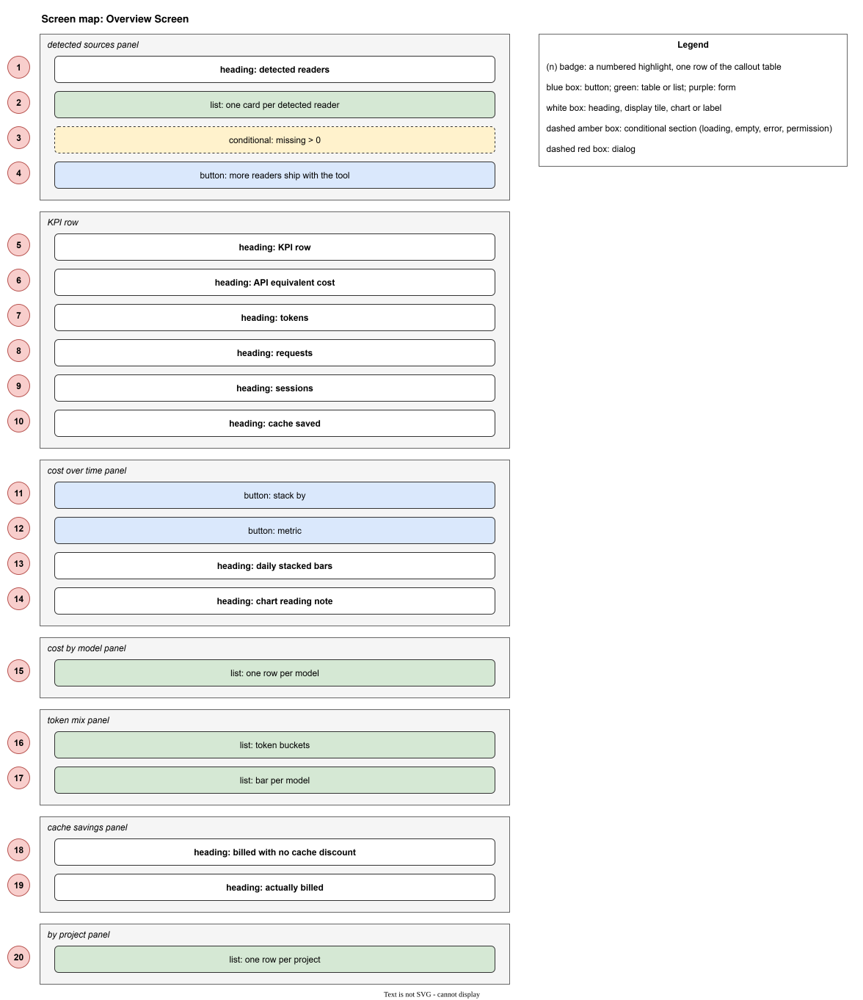

active approved inferred covers web/src/prototype/**
Overview Screen Screen Map
This view shows the overview screen of the prototype: the panels a person sees first, in the order they appear. It helps a developer check that the real dashboard offers the same panels and the same controls. Each numbered highlight matches a row in the table of the screen note.
Overview Screen screen map

Node citations
- el-1:
web/src/prototype/OverviewScreen.tsx:48-52 - el-2:
web/src/prototype/OverviewScreen.tsx:55-72 - el-3:
web/src/prototype/OverviewScreen.tsx:75-83 - el-4:
web/src/prototype/OverviewScreen.tsx:76-82 - el-5:
web/src/prototype/OverviewScreen.tsx:93-93 - el-6:
web/src/prototype/OverviewScreen.tsx:94-101 - el-7:
web/src/prototype/OverviewScreen.tsx:115-120 - el-8:
web/src/prototype/OverviewScreen.tsx:123-128 - el-9:
web/src/prototype/OverviewScreen.tsx:131-136 - el-10:
web/src/prototype/OverviewScreen.tsx:139-144 - el-11:
web/src/prototype/OverviewScreen.tsx:178-188 - el-12:
web/src/prototype/OverviewScreen.tsx:189-198 - el-13:
web/src/prototype/OverviewScreen.tsx:203-209 - el-14:
web/src/prototype/OverviewScreen.tsx:211-213 - el-15:
web/src/prototype/OverviewScreen.tsx:233-246 - el-16:
web/src/prototype/OverviewScreen.tsx:270-277 - el-17:
web/src/prototype/OverviewScreen.tsx:287-294 - el-18:
web/src/prototype/OverviewScreen.tsx:319-324 - el-19:
web/src/prototype/OverviewScreen.tsx:325-329 - el-20:
web/src/prototype/OverviewScreen.tsx:352-359 - badge-1:
web/src/prototype/OverviewScreen.tsx:48-52 - badge-2:
web/src/prototype/OverviewScreen.tsx:55-72 - badge-3:
web/src/prototype/OverviewScreen.tsx:75-83 - badge-4:
web/src/prototype/OverviewScreen.tsx:76-82 - badge-5:
web/src/prototype/OverviewScreen.tsx:93-93 - badge-6:
web/src/prototype/OverviewScreen.tsx:94-101 - badge-7:
web/src/prototype/OverviewScreen.tsx:115-120 - badge-8:
web/src/prototype/OverviewScreen.tsx:123-128 - badge-9:
web/src/prototype/OverviewScreen.tsx:131-136 - badge-10:
web/src/prototype/OverviewScreen.tsx:139-144 - badge-11:
web/src/prototype/OverviewScreen.tsx:178-188 - badge-12:
web/src/prototype/OverviewScreen.tsx:189-198 - badge-13:
web/src/prototype/OverviewScreen.tsx:203-209 - badge-14:
web/src/prototype/OverviewScreen.tsx:211-213 - badge-15:
web/src/prototype/OverviewScreen.tsx:233-246 - badge-16:
web/src/prototype/OverviewScreen.tsx:270-277 - badge-17:
web/src/prototype/OverviewScreen.tsx:287-294 - badge-18:
web/src/prototype/OverviewScreen.tsx:319-324 - badge-19:
web/src/prototype/OverviewScreen.tsx:325-329 - badge-20:
web/src/prototype/OverviewScreen.tsx:352-359